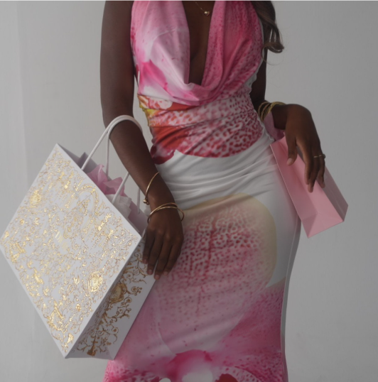

What even is a Neutral?

Open Instagram, TikTok, or Pinterest for more than a few minutes, and a pattern begins to emerge: turquoise tank tops, floral sundresses, neon green bikinis, and hot pink statement tops. Bright colors seem to be following us everywhere this summer, appearing in outfit inspiration posts, storefront displays, and shopping hauls with a persistence that is impossible to ignore. After years of muted palettes, quiet luxury, and wardrobes dominated by black, white, and beige, fashion appears to have fallen in love with color again!
Of course, this isn’t the first time society has become enamored with bright hues. In fact, today’s obsession with turquoise and coral echoes a moment from nearly two centuries ago.
Historians often refer to the mid-nineteenth century as the Victorian Color Revolution. Before synthetic dyes were invented, achieving vivid colors was difficult, expensive, and often reserved for the wealthy. The development of artificial dyes changed everything. Suddenly, brilliant purples, blues, pinks, and greens became widely available, transforming fashion essentially overnight. What had once been a luxury became accessible, and with that accessibility came a widespread fascination with color. Clothing became brighter, bolder, and more expressive.
The parallels to today are difficult to miss.
Fashion trends have always reflected collective moods, and after years of restraint, there seems to be a renewed appetite for visual exuberance. The turquoise and coral shades dominating this summer feel almost optimistic: are playful, unapologetic colors. They demand attention in a way that off-white never could.
Well, brands have clearly noticed. Across the fashion industry, collections have been saturated with the colors currently flooding social media feeds. Brandy Melville, in particular, has embraced the trend wholeheartedly, with the famous turquoise and coral Priscilla Pants becoming the season's most coveted pieces. The shades feel distinctly summery, reflecting nostalgia.
And Brandy Melville is hardly alone. Free People has leaned into vibrant bohemian palettes, while GAP has infused classic basics with brighter shades. White Fox, Glassons, Scandivv, ASOS, Jaded London, and PINK have all embraced colorful collections that encourage dressing beyond the safe confines of neutrals. Whether through a bright tank top, a statement mini dress, or an electric-colored accessory, these brands are participating in a broader cultural shift toward visibility rather than subtlety.
Perhaps what makes this trend particularly interesting is how naturally it fits into the social media landscape. The bright colors are taking over online. They stand out in the crowd and translate instantly across digital platforms.
This summer, we'll throw the neutrals out and bring the bright, bold, and fun colors back!